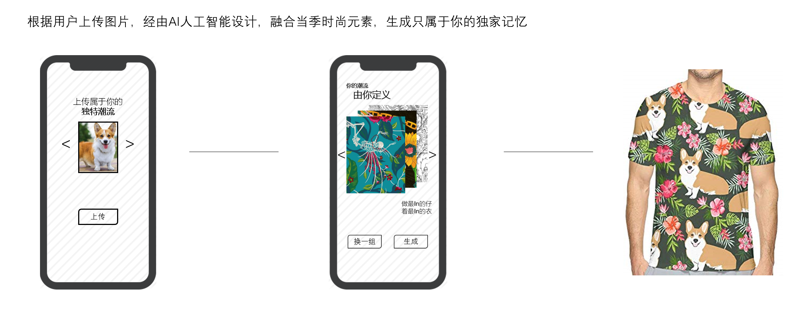
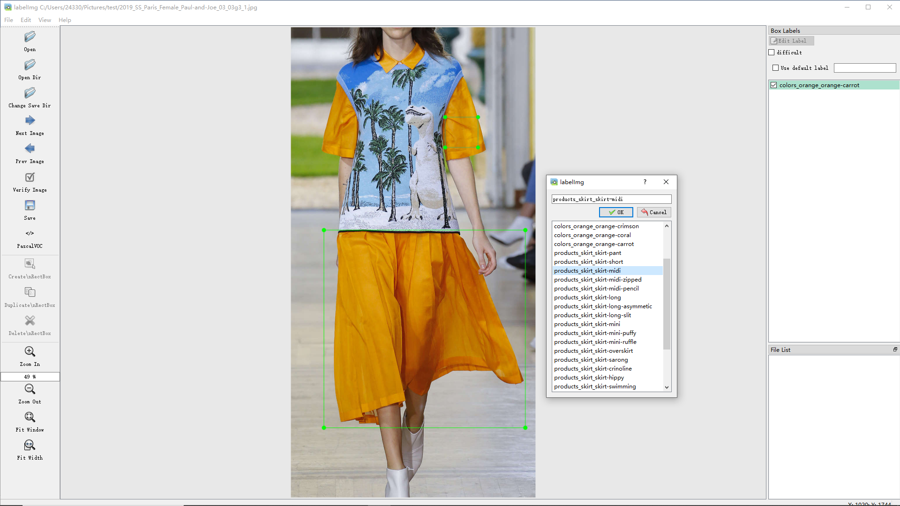
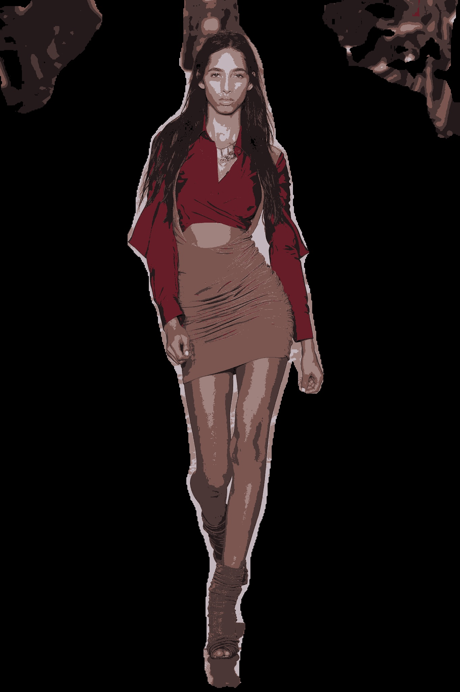
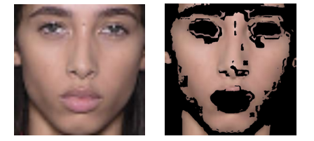
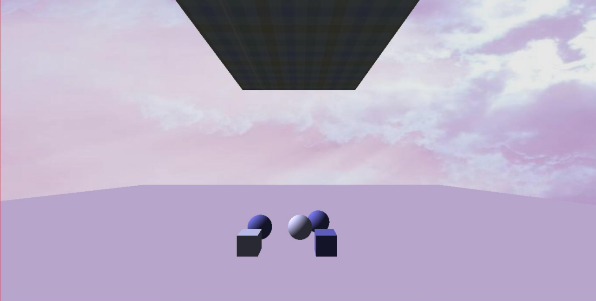

Quick Look of my Project
What I am doing now
Dali-Brush
To customize the personalized clothes for the clients (blend the user-supplied elements with a stylish texture to create a new printing)

If we merge an element with any texture, this is not fashion. We must have a way to determine whether it is prevailing.
 |
The picture shows a product's lifecycle. For example, when houndstooth first appears in the show, it is at the beginning of the curve(infancy); when some fast-moving consumer goods (FMCG) brands, like Zara or H&M, start to use this element in large quantities, it is in the peak fashion period(epidemic); when it starts to become cheesy, it is in the out area(recession). |
Our current trend work is based on the history data.

This statistics are based on my former research on posture recognition and color cluster.
Labelling system
So we need to Train a model to determine the product (texture) is now in its infancy, epidemic or recession. My idea is to locate a product that is on its rise or peak or falling period through thefashion runway images, the sales condition of FMCG brand, and the Web celebrities’ comment on clothes.
To meet our specific requirement, I designed a label system according to our chief designer.

ColorAI Lab in NewYork
1 Removed the background: body recognition; got a mask; superimposed the original picture and the mask; cut out the human body, turned all pixels of the background black
2 Used Kmeans++ to get the color clustering; selected the top six ones of the largest color;


3 After observing the result I find there are some color ranked very high but not so popular. Then I found it is models' skin color. However, the skin is hard to detect because the complexity of the garment and body gesture. Using the character that professional shows ask models' faces and body keep the same color. I detect the face for the first step to make the result of skin detection better. Removed skin color based on YCrCb color space.


New color bar
CG Project
Ray Tracing
Trace the light which undergos reflection, refraction, diffuse reflection

Cloth Simulation
Use Mass-Spring Model to simulate cloth; introduce force (gravity, wind force, elastic force) and collision (cloth-rigid body & self-collision) into the system.
|  |  |
THANKS FOR YOUR PATIENCE